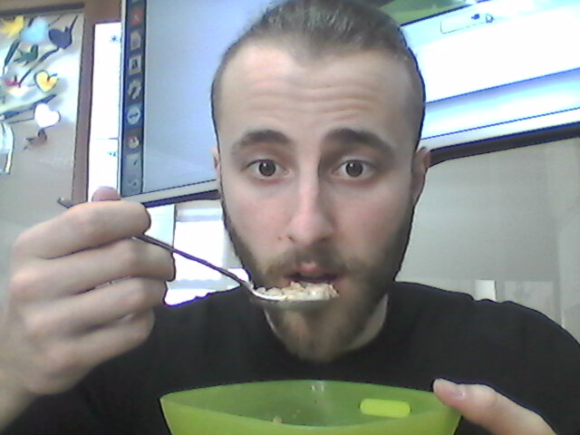

Alex Balitsky
Hometown:
Kiev
Hobbies
Every man has an occupation that he really loves, and it is different for each of us.
A hobby is an occupation that we never get tired of. Various hobbies help us to relax because
we enjoy them. As for me, I have several hobbies.
My first hobby is playing the guitar. I began to play the guitar last summer. But I did
not go to the musical school because I decided to learn chords by myself. The first success came
very soon. Than I clamped more difficult chords, and now I continue learning. I relax while
playing the guitar, that’s why it is my hobby.
My second hobby is listening to music. When I put on my headphones, I dive into the other
world. I listen to music of various genres. Music helps me to relax and think about important
things. My favorite groups are: Sigur Ros, Placebo, Muse, Bring Me The Horizon and others.
My third hobby is playing computer games. Sometimes I want to rest from doing my homework
and play computer games. It is very interesting, especially when you play online games such as
DOTA2, Battlefield 4 and others. You can talk to people and play with them. Maybe, if you get to
know them better, you will continue playing together. But computer games can harm your health.
That’s why you should not play them too long.
In conclusion, I would like to say that hobbies are very useful and interesting. People
should have hobbies and enjoy life. I hope you will agree with me.